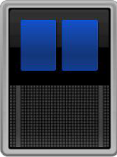
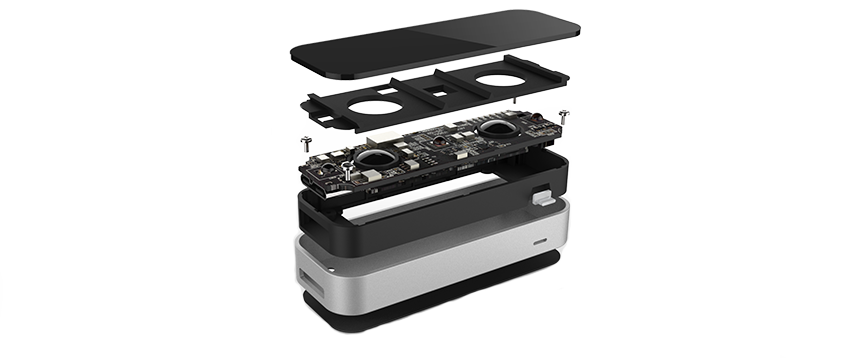

The user interface (UI)
is everything designed into the product
with which a person may interact.
The user experience (UX)
encompasses all aspects of the
end-user’s interaction with the products.
How can we reach a new level?
WEB GL
IT IS ONLY PIXELS
Most of engineers who don’t know WebGL
would answer that
it is interface for using 3D on browser.
But, that is incorrect. Most important part of WebGL is
That is interface for using GPU on browser.
Of course, GPU is mostly used for graphics stuff including 3D.
But, the possibility is not so limited.
To do fast graphics,
you really need the parallel processing power.
Multiple cores
CPU
Thousands of cores

GPU


Evolution into the WEB
OpenGL for Embedded Systems
Versions


Browsers support


GLSL
GLSL features
- A part of WEBGL
- Compiles on CPU
- Cross platform
- C syntax
- Strict typing (float, integer, boolean, vec2, vec3, vec4, mat2, mat3, mat4, sampler2D)
- Design for math
OPENGL pipeline with GLSL
Vertices
Vertex
Shader
Primitives
Generator
Rasterization
Fragment
Shader
Testing
Blending
FrameBuffer
function main() {
const canvas = document.getElementById('main-wrapper'),
gl = canvas.getContext('webgl');
canvas.height = gl.canvas.clientHeight;
canvas.width = gl.canvas.clientWidth;
gl.viewport(0, 0, gl.canvas.width, gl.canvas.height);
let vShader = gl.createShader(gl.VERTEX_SHADER);
gl.shaderSource(vShader, vertexShaderSource);
gl.compileShader(vShader);
let fShader = gl.createShader(gl.FRAGMENT_SHADER);
gl.shaderSource(fShader, fragmentShaderSource);
gl.compileShader(fShader);
let program = gl.createProgram();
gl.attachShader(program, vShader);
gl.attachShader(program, fShader);
gl.linkProgram(program);
gl.useProgram(program);
gl.drawArrays(gl.POINTS, 0, 1);
}
main();
const vertexShaderSource =
`void main()
{
gl_Position = vec4(0.0, 0.0, 0.0, 1.0);
gl_PointSize = 40.0;
}`
const fragmentShaderSource =
`void main()
{
gl_FragColor = vec4(0.0, 0.0, 1.0, 1.0);
}`;
WTF?
How to make it easier?

Babylon.js

A-Frame
Three.js
Why Three.js ?
- Performs for us a low-level work on WEBGL
- Strong community and a lot of good examples
- Understandable structure and wide opportunities for adjustment
let canvas = document.getElementById('canvas'),
scene, camera, renderer, light, controls, rotationCoefficient = 0;
function initScene() {
camera = new THREE.PerspectiveCamera(65, window.innerWidth / window.innerHeight, 0.1, 10000);
renderer = new THREE.WebGLRenderer({ antialias: true, canvas: canvas });
camera.position.set(200, 100, 100);
renderer.shadowMap.enabled = true;
renderer.shadowMap.type = THREE.PCFSoftShadowMap;
renderer.setPixelRatio(window.devicePixelRatio > 1 ? 2 : 1);
renderer.setSize(window.innerWidth, window.innerHeight);
renderer.gammaInput = renderer.gammaOutput = true;
renderer.toneMapping = THREE.LinearToneMapping;
renderer.setClearColor(0x000000);
scene = new THREE.Scene()
}
function addLights() {
let light = new THREE.DirectionalLight(0xdfebff, 1),
lightDistance = 400;
light.position.set(200, 300, -250);
light.castShadow = true;
light.shadow.mapSize.width = 512;
light.shadow.mapSize.height = 512;
light.shadow.camera.left = -lightDistance;
light.shadow.camera.right = lightDistance;
light.shadow.camera.top = lightDistance;
light.shadow.camera.bottom = -lightDistance;
light.shadow.camera.far = 800;
scene.add(new THREE.AmbientLight(0xffffff, 1));
scene.add(light);
}
function rendering() {
requestAnimationFrame(rendering);
renderer.render(scene, camera);
animate(scene);
};
function animate(scene) {
scene.children[2].position.x = Math.sin(rotationCoefficient * 1) * 50;
scene.children[2].position.z = Math.cos(rotationCoefficient * 1) * 50;
scene.children[2].rotation.z += 0.1;
scene.children[2].rotation.y += 0.05;
rotationCoefficient += Math.PI / 180 * 2;
}
let objects = {
cube: {
geometry: new THREE.CubeGeometry(30, 30, 30, 10, 10, 10),
material: new THREE.MeshStandardMaterial({
emissive: 0.2,
metalness: 0.9,
color: 0xff2233
}),
position: [30, 30, 10]
},
sphere: {
geometry: new THREE.SphereGeometry(10, 32, 32),
material: new THREE.MeshStandardMaterial({
emissive: 0.1,
metalness: 0.73,
color: 0x008888
}),
position: [0, 20, 0]
},
plane: {
geometry: new THREE.PlaneGeometry(200, 200, 2).applyMatrix(new THREE.Matrix4().makeRotationX(-Math.PI / 2)),
material: new THREE.MeshStandardMaterial({
emissive: 0.6,
color: 0x333333
}),
position: [0, 0, 0]
}
}
function createMesh(element) {
let elementMesh = new THREE.Mesh(element.geometry, element.material);
elementMesh.castShadow = true;
elementMesh.receiveShadow = true;
elementMesh.position.set(...element.position)
scene.add(elementMesh)
}
function createElements() {
for (let mesh in objects) {
createMesh(objects[mesh]);
}
}
initScene();
addLights();
createElements();
rendering();
controls = new THREE.OrbitControls(camera);
But ...
DEMO 1
DEMO 2
And this is not the reason
for holy wars
because...

Say javascript is slow
One more time!
How could we increase it more?
Reach into virtual reality
with your bare hands
